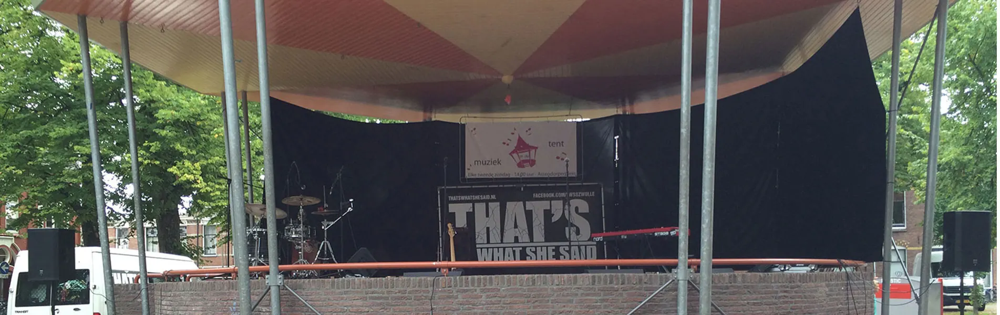
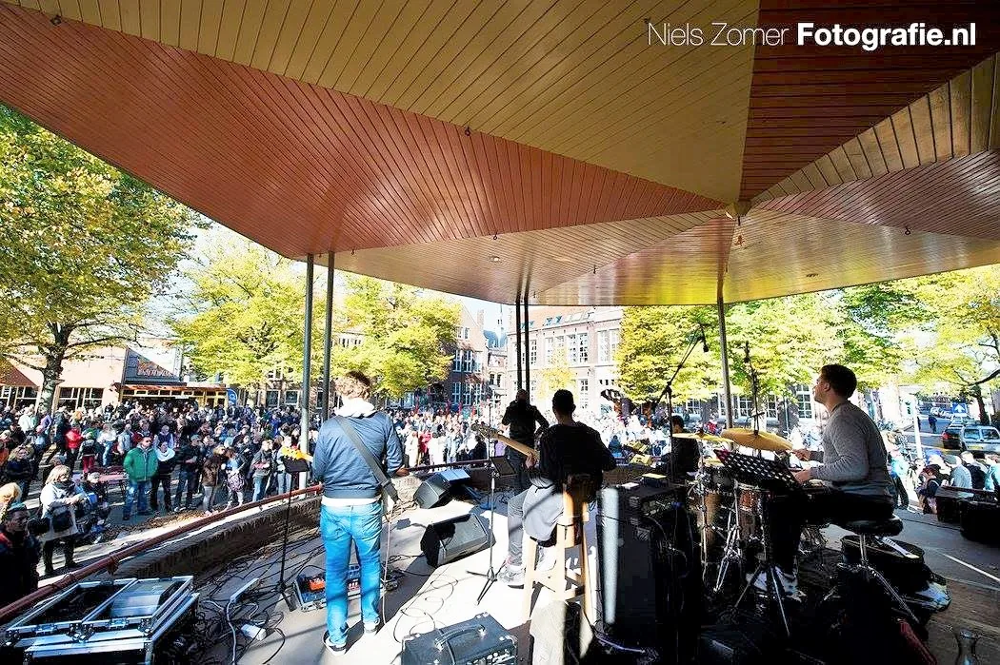

Goed geluid, zonder gedoe.
Rovo-sound verzorgt professionele geluidssystemen en live-geluidstechniek voor muzikanten, bands, horeca, evenementen en bruiloften. Betaalbaar voor iedereen, ook voor beginnende bands.
Een jong en dynamisch bedrijf met één doel: jouw muziek laten klinken zoals jij het bedoelt.
Niets is zo vervelend als je met je band mooie muziek speelt, maar het in de zaal niet overkomt zoals je wilt. Daar doen wij wat aan.
Onze doelgroepen zijn muzikanten, bands, horeca, cafés, evenementen en bruiloften. Uiteraard is in overleg bijna alles mogelijk. We blijven voortdurend investeren in ons materiaal en onze kennis, zodat we je steeds meer kunnen bieden.

Waar we je mee helpen
Van een akoestische set in een café tot een complete band op een buitenpodium. We leveren het geluidssysteem, bouwen op, mixen en bouwen weer af.
Muzikanten & bands
P.A., monitors, microfoons en een geluidstechnicus die jouw mix verzorgt tijdens het optreden.
Lees meerHoreca & cafés
Live muziek in je zaak? Wij zorgen dat het lekker klinkt voor je gasten én voor de band.
Lees meerEvenementen & feesten
Buitenpodia, dorpsfeesten en bedrijfsevenementen: geluid dat tot achterin overkomt.
Lees meerBruiloften
Spraakverstaanbaarheid bij de ceremonie, sfeer bij het diner en volume op het feest.
Lees meerProfessionele apparatuur van A-merken
We werken met een actief Electro-Voice ETX P.A.-systeem, Electro-Voice ZLX floormonitors, een digitaal Behringer X32 Compact mengpaneel met S16 stagebox en een uitgebreide microfoonset van Shure, Sennheiser, AKG en Rode.
- P.A.-systeem: Electro-Voice ETX-18SP subwoofers en ETX-12P tops
- Floormonitors: Electro-Voice ZLX-15P en ZLX-12P
- Mengpaneel: Behringer X32 Compact met S16 digitale stagebox
- Microfoons & DI's: Shure, Sennheiser, AKG, Rode, Radial en BSS
Eigen monitormix maken met je smartphone of tablet? Dat kan.

Van aanvraag tot afbouw in vier stappen
Duidelijk, persoonlijk en zonder verrassingen. Zo pakken we elk optreden aan.
Aanvraag
Vertel ons wat je gaat doen: soort optreden, datum, locatie en bezetting. Bellen of mailen mag ook.
Advies & offerte
We denken mee over wat er echt nodig is en sturen een duidelijke offerte. Afspraak is afspraak.
Opbouw & soundcheck
We bouwen op tijd op, lijnen het systeem in en doen een goede soundcheck met de band.
Optreden & afbouw
Tijdens het optreden verzorgen we de mix. Na afloop bouwen we netjes af. Jij hoeft nergens aan te denken.

Ontstaan uit pure passie voor muziek en techniek
Rovo-sound is het bedrijf van Robin Vos. Na jaren piano- en gitaarles bleek zijn passie in de techniek te liggen: alles wat erbij komt kijken om een live optreden goed te laten klinken.
“Afspraak is afspraak, zonder bijkomende kosten.”Robin Vos, Rovo-sound
Goed om te weten
Wat kost het huren van een geluidssysteem met technicus?
Voor welke grootte van optredens is Rovo-sound geschikt?
Blijft er een geluidstechnicus bij tijdens het optreden?
Kunnen muzikanten hun eigen monitormix maken?
In welke regio werken jullie?
Laten we jouw evenement laten klinken zoals het hoort.
We gaan graag met je in gesprek over de mogelijkheden om jouw optreden, feest of evenement geluidstechnisch tot een groot succes te maken. Vrijblijvend en zonder verrassingen achteraf.